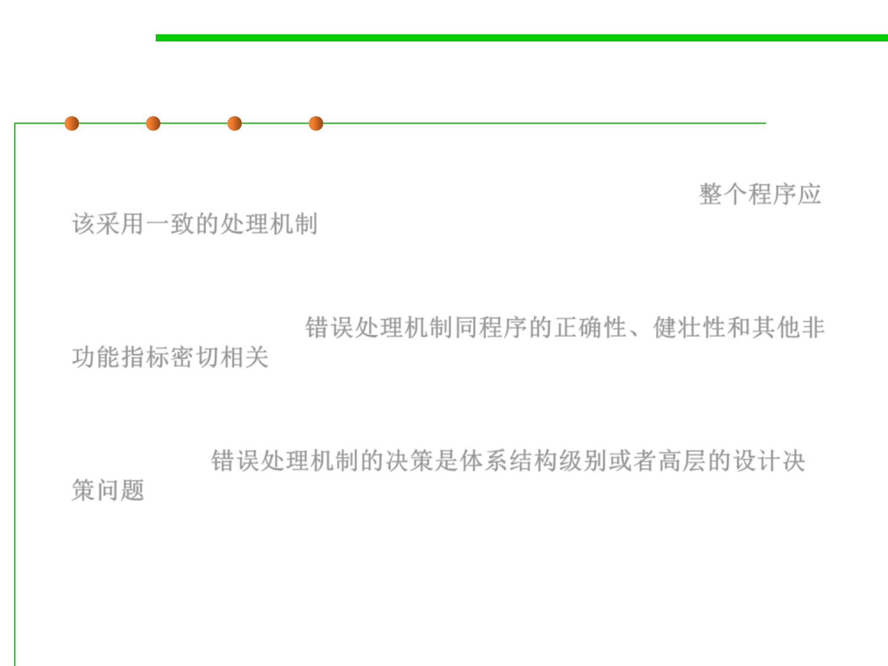

7.2 Error and Exception Handling
High-Level Design Implications of Error Processing
▪ With so many options, you need to be careful to handle invalid
parameters in consistent ways throughout the program. 整个程序应
该采用一致的处理机制
▪ The way in which errors are handled affects the software’s ability to
meet requirements related to correctness, robustness, and other non-
functional attributes. 错误处理机制同程序的正确性、健壮性和其他非
功能指标密切相关
▪ Deciding on a general approach to bad parameters is an architectural
or high-level design decision and should be addressed at one of
those levels. 错误处理机制的决策是体系结构级别或者高层的设计决
策问题
▪ Once you decide on the approach, make sure you follow it consistently.